正文共计4000字左右
预计阅读时间7min
转载请在后台回复“授权”
昨晚7时，2019年诺贝尔文学奖结果揭晓，奥地利作家彼得·汉德克获奖。
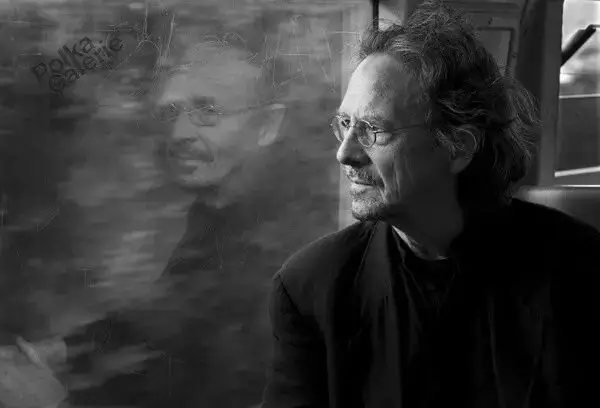
评委会这样评价汉德克，“他凭借影响深远的作品和语言的独创性，探索了人类经验的外围和特殊性。”
看到这个结果，我是非常激动的。
因为六百击介绍的第一部电影就是彼得·汉德克的作品——《柏林苍穹下》。
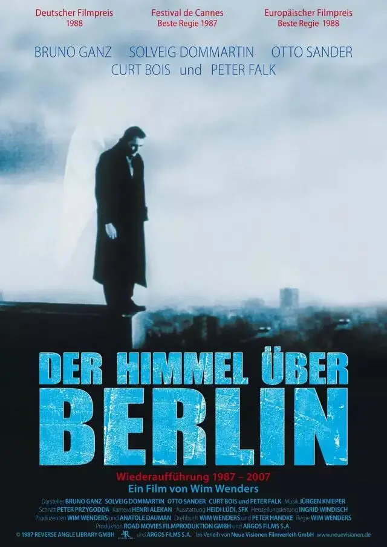
这部作品由彼得·汉德克编剧，维姆.文德斯导演，是一部让我看了近十遍的电影。
我曾在一篇自述中提到这部作品，《柏林苍穹下》是让我真正爱上电影的六部作品之一。
漫游于黑白世界的天使、穿越时空的意象、纯真诗意的台词、孤独的自白、Nick cave 酒吧的演唱以及天使坠入人间的选择，曾带给我极大的震撼和遐想。
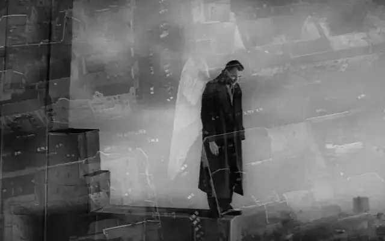
所以，再次向大家推荐这部伟大的作品，在正文阅读前，我为大家剪辑了里面部分精彩片段，大家可以先感受一下彼得·汉德克的漫游世界。
《柏林苍穹下》开始于彼特.汉德克的一首诗《当孩子还是孩子时》：
当孩子还是孩子的时候，
他对任何事都没有意见，
也还没有任何习惯，
常常交叉着腿就坐下来，
想都不想就奔跑起来，
而且照相时不会刻意做鬼脸。
当孩子还是孩子时，
他摇晃着胳膊走路，
想要小溪变成大河，
大河变成洪流，
而这个小水坑就是大海洋。
当孩子还是孩子的时候，
他不晓得他是个孩子，
所有的东西都充满生命，
所有的生命都合而为一。
当孩子还是孩子的时候，
他对任何事都没有意见，
也还没有任何习惯，
常常交叉着腿就坐下来，
想都不想就奔跑起来，
而且照相时不会刻意做鬼脸。
当孩子还是孩子的时候，
这时他会问这些问题：
为什么我是我，而不是你？
为什么我是在这里，
而不是在那里？
时间是什么时候开始，
空间又是什么时候消逝？
难道白日底下的人生，
只不过是一场梦？
难道我所见所听所闻，
不是此生之外的一场幻影？
邪恶真的存在吗？
世上真的有邪恶的人吗？
我来到这世上之前的我，
是否并非此刻这副模样？
会不会有这么一天，
我将不再是现在的我？
当孩子还是孩子的时候，
他讨厌吃菠菜、豆子、米布丁，
以及水煮的花椰菜，
而他现在什么都吃，
却不是他一定得吃。
当孩子还是孩子的时候，
他只有一两次在陌生的床上醒来，
如今却一而再、再而三地在陌生人
身旁醒来。小时候，很多人
看起来是美丽的， 而现在要运气好，
才有可能会遇上几个。
当孩子还是孩子的时候，
他心中有个清晰的天堂影像，
而如今，却只能拼命地猜测它的样子。
他那个时候无法理解什么叫「虚无」，
而如今，他只要一想到，就颤抖害怕。
当孩子还是孩子时，他只看到苹果和面包
他以为那就是他最大的快乐
长大以后，快乐就越来越少了，
只有在工作以后才有快乐的片刻
当孩子只是孩子时
糖果就是糖果，就是这样
在核桃树下，他张开手，非常激动
他总是等待着，朝一棵树扔一个树枝，
就象扔火箭一样。
这首迷人的诗是由天使丹密尔用低沉的声音读出来的。
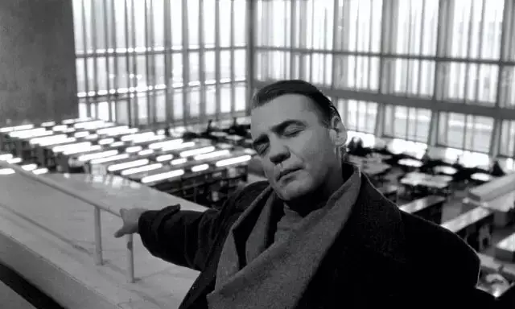
丹密尔和另一位天使卡西尔是守护柏林的天使。
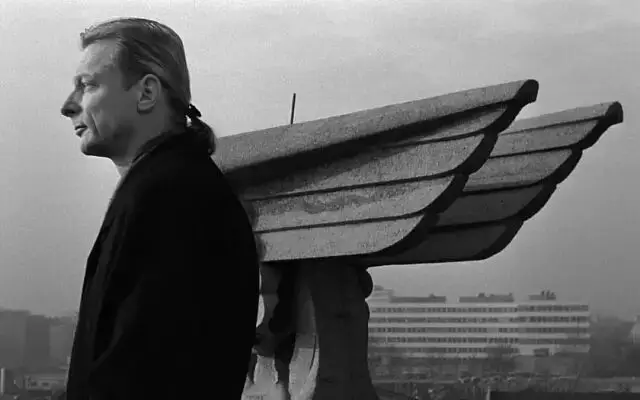
作为天使，他们能够听到每个人内心的声音，但却没有办法直接介入到人类的世界来帮助他们。
也就是说，天使知道每一个心中的愁苦，但只是知道并不能采取行动。
这将是多么大的心里负担！
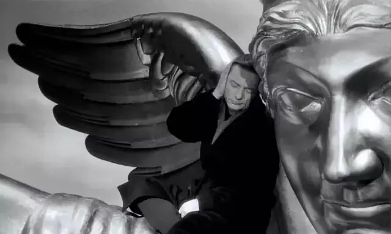
所以，面对人类的苦难，卡西尔选择冷眼旁观，而丹密尔则充满了对人类的悲悯。
但不论天使是冷漠还是悲悯，人类的世界并没有因此有任何的改变，依旧一地鸡毛。
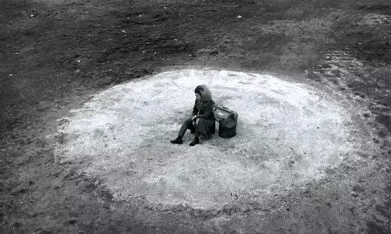
终于，丹密尔最终无法抑制对人类的同情和热爱，他选择放弃永恒的天使身份，道成肉身“堕入”凡间.......
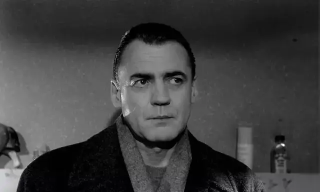
在这样的天使视角下，我们再来细细品味《当孩子还是孩子时》，就会有不同的感受。
这首看似单纯的诗歌背后浸透了孤独和悲伤，人类世界满目疮痍，也只有在孩童身上才能看到一丝希望。
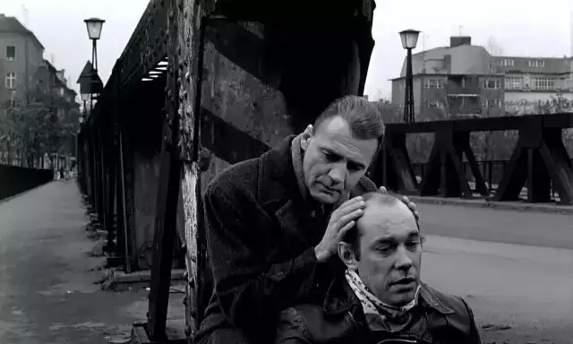
而正如诗歌所言“当孩子还是孩子的时候，他心中有个清晰的天堂影像，而如今，却只能拼命地猜测它的样子。”
孩童作为一种特殊的意象，在电影中有更深层次的表达：它代表着人类创世之初未堕落的人性。
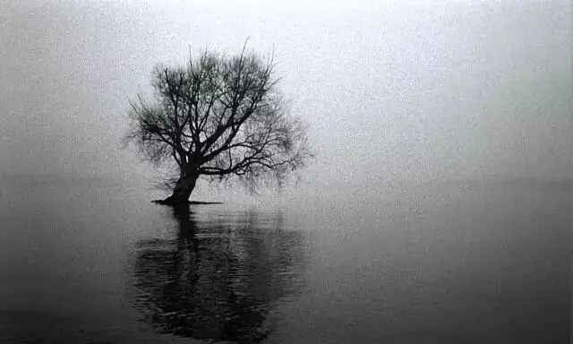
那个时候，人类还没有罪性，天堂就在他们的心中。
可如今，人类堕落，天堂破碎为人间炼狱，割裂、孤独、空虚填满了每个人的内心。
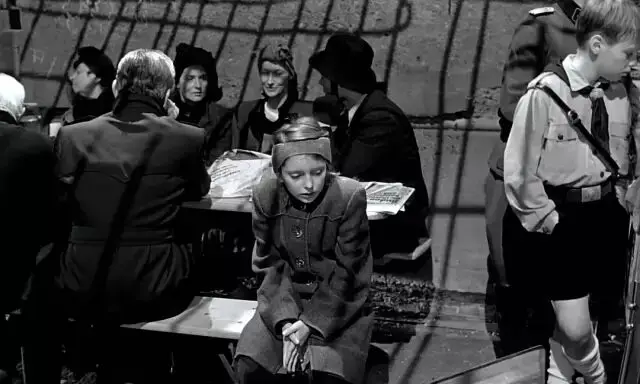
这就是柏林苍穹下的真实写照，二战之后德国处于冷战的分裂之中，当时人们无法面对战争苦难之下的支离破碎，也无法面对难以调和的空虚，过去人类像孩子一样的单纯、合一、快乐已经永远的成为了过去。
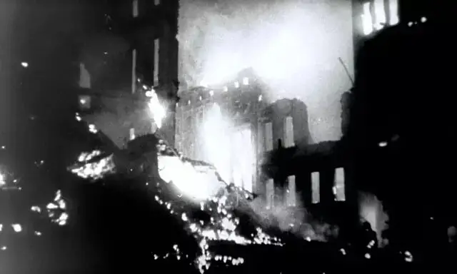
作为德国新电影运动“眼睛”的维姆.文德斯，与彼特.汉德克合作的《柏林苍穹下》审视了那个时候的德国，文德斯也靠着这部电影摘得第四十届戛纳电影节的最佳导演。
文德斯本人形容此片为难以描述的电影：
当上帝极端失望，最后准备永远弃世界于不顾时，有一些天使不同意他的做法，站在人类这一边，辩说应该再给人类一次机会。
因计划遭到阻挠，上帝显得极为生气，并将天使放逐到地球上最糟糕的地方：柏林。
然后上帝就离开了。
于是，文德斯借助天使卡西尔与丹密尔游走于柏林的各个角落，他们飞行于柏林的大街小巷，出没在图书馆、片场、马戏团、酒吧，他们能听到每个人心里的真实想法，但是却不能做任何事情去帮助他们。
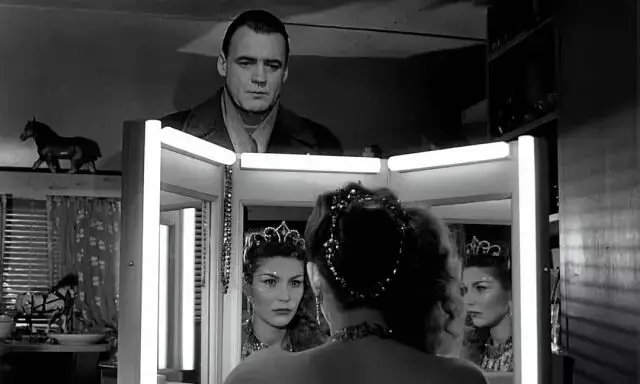
只有聆听和静默的关注，于是维德斯用他最独特的内心独白方式，借着天使的视角编织起整部电影。
无怪乎文德斯说这部电影难以描述，因为到处都是独白，到处都是故事，到处都是眼泪和绝望：
''互有隔阂的夫妻、不满于孩子玩音乐的父母、被人遗忘不被人需要的图书馆老人、街头赚不到回乡钱的妓女、听着音乐要跳楼的青年、失去工作的马戏团少女、被战火炸毁的教会、荒凉的柏林城........''
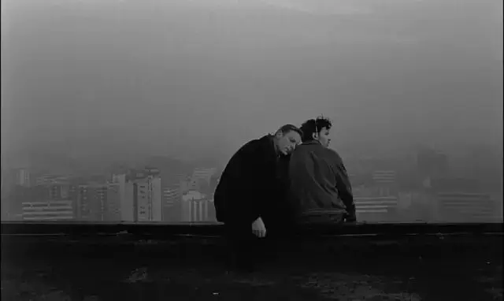
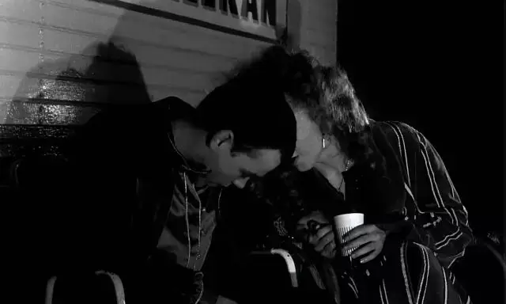
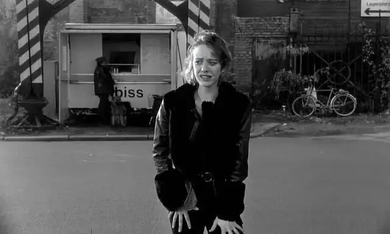
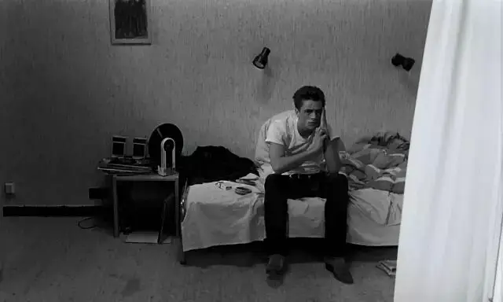
当苍穹之下柏林人民的内心世界真实的呈现在观众的面前时，我们如同电影里的天使一样，只能隔着屏幕或悲悯或麻木，但是无能为力。
所以电影中充满了难言的感伤和叹息。
电影中只有孩子们能看到天使卡西尔和哈密尔，而天使面对孩子时才会发出久违的笑容，每当孩子的画面出现，低沉悲悯的旁白就会想起，“当孩子还是孩子时........”
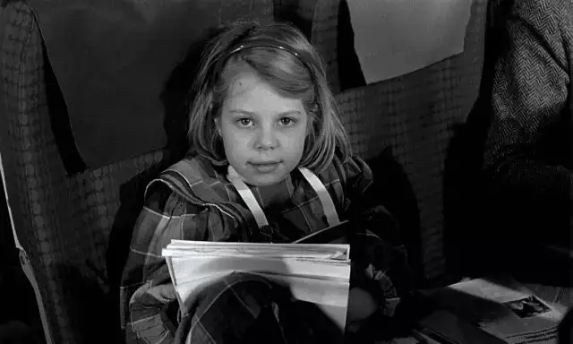
天使在怀念创世之初的人类。
于是两个天使不禁一起回想了上帝创造世界和人类的过程，起初，天地是混沌的，后来出现了水，出现了爬行动物，出现了人类，当有着上帝形象的人类出现时，天使们都发出了微笑。
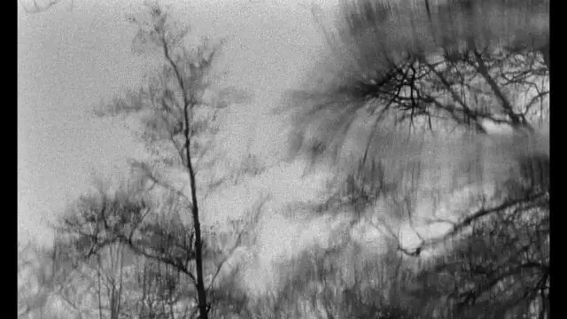
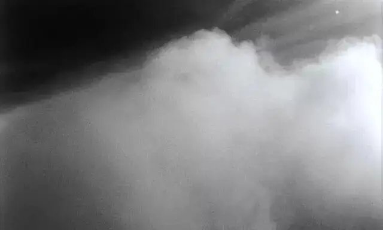
但是当人类学会发动战争时，天使们都哭了，人类已经失去了起初的良善——人堕落了。
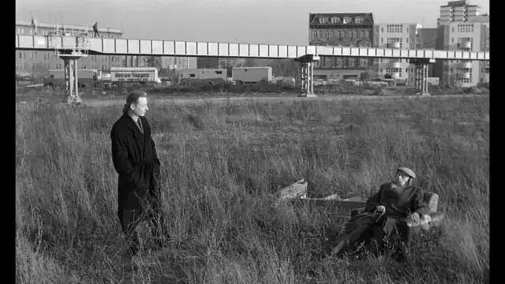
人类不仅处在困境中，更绝望的是人类被上帝抛弃了。
这种感受非常真实，两次残酷的世界大战撼动了欧洲的基督教根基，难以承受的灾难让人们远离了上帝和对永恒的盼望。
对于彼得·汉德克自己，更是有着非常真实的体验，他在成为作家之前，差一点成为一名牧师。
彼得·汉德克出生寒门，只能去免费的教会学校读书，按照正常轨迹，他毕业后会成为一名牧师。
但穷苦的家境，被战火摧毁的故乡，死于枪弹下的舅舅，自杀的母亲......这些灾难最终让彼得·汉德克放弃学业，成为了一名自由作家。
所以，《柏林苍穹下》没有上帝，只有见证人类苦难却没有救赎能力的天使（代表他自己）。
出路在哪里？
文德斯和彼得·汉德克借着天使哈密尔做出了选择。
既然天使帮不了人类，那么就选择“堕落为人”，和人类一起选择物质和快乐的活在当下。
去喝咖啡，去听演唱会，去理发，去感受每一口新鲜的空气，天使视角下的黑白世界也变成了彩色的花花世界。
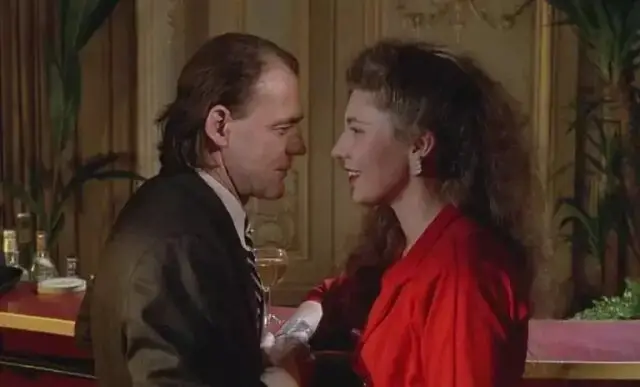
哈密尔的道成肉身和耶稣的道成肉身不同，耶稣是道成肉身来救赎人类，他进入世界是为了将人类重新带回到永恒之中。
所以，耶稣是救主。
哈密尔则是道成肉身成为了人类的朋友，和人类一同经历生老病死，没有之后的复活，没有奇迹和救赎，只有感同身受和握在手中的当下。
面对肉体和心灵的空虚，天使哈密尔抛弃了永恒，他每时每刻都要对自己说“现在、现在”而不是“永恒、永恒”。
这个选择呈现了两次世界大战之后欧洲的信仰危机，很多年轻一代的欧洲人选择抛弃上帝，拥抱世界，抛弃永恒价值，拥抱活在当下。
他们最终用空虚来对抗空虚，以新的刺激取代旧的刺激，直至死亡。
《柏林苍穹下》的永恒世界成为一个遥不可及甚至已渐被遗忘的梦。
电影一面在怀念那最起初的美好，一面又在积极的“堕入凡间”，这种割裂便是当今社会人类面临的普遍困境：似乎在追求永恒，却不可避免地活在了当下。
每个人隐隐约约觉得需要信仰，但却找不到信仰的着力点，信仰似乎变成了一种空中楼阁，已经无法承载人类遭受的肉身之苦和精神之苦。
似乎，只有当下，只有现在能握住的每一秒，只有现在看到心仪女孩时那种砰砰直跳的感觉最真实。
所以，绝大多数选择了可以把握的现在和那搅动着七情六欲的肉体，丧失了未见之事的确据和静默等待的能力。
我记得当初写《柏林苍穹下》时，我最后批评电影缺少了对于永恒的正确理解和想象力：不是因为苦难，而没有了上帝，而是因为有了堕落，才有了苦难。
现在，我没有底气用这个标准答案来为自己、为大家振作信心，因为生活里的软弱是那样的真实，现实里的黑暗是那样的恐怖。
我不得不承认，当下的处境已经让我产生了速度极快、频率极高、只顾当下的条件反应，甚至已经没有空间给永恒留下位置。
咖啡是苦是甜，我宁愿直接端起来尝一下，却鲜有心思在这杯咖啡里寻找永恒的线索和意义。
这种困境也让我对圣经中的救赎之路有了更深的认识，除非他自己亲自道成肉身来寻找我，否则，就是我穷尽全身的神经去感知永恒也无济于事，我只是一个失去知觉、掉在地狱里的罪人。
《柏林苍穹下》虽然深刻地刻画了存在主义盛行的现实处境，但《当孩子还是孩子时》始终贯穿始末，电影背后依旧深藏着极强的宗教性，即使是活在当下，也依旧难以掩盖对于起初美好的向往。
作为天主教徒的彼得.汉德克也曾说，“宗教就是比人现实的样子要更多面、更美好、更深刻、更内在。在内心中，人还有比自己意识到的现实更宽广更伟大的东西，这些东西是你应该、也是必须去成为的，它有一种逻辑上和伦理上的必要性”。
彼得.汉德克虽然没有成为牧师，但经历世间百态后，他的文字和表达更具有穿透力和真实的力量，更能让处于深渊里的人共鸣和思考。
当孩子还是孩子时，他想回家就回家，他不会遍体鳞伤却选择远走他乡，因为他知道家乡里有等着他的父亲。
相关阅读
▼
（点击图片即可获取全文）
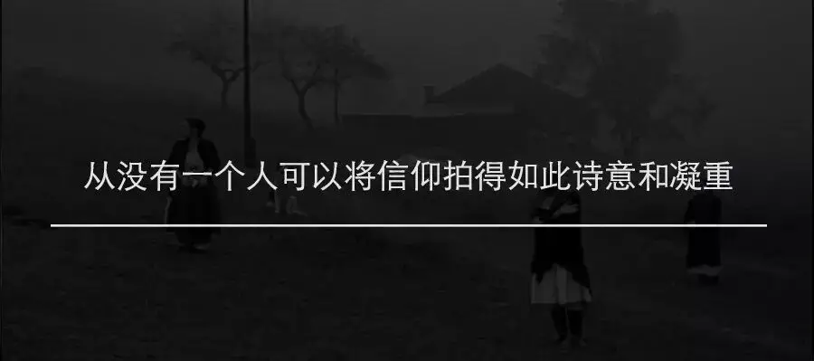
这里没有挑逗你眼目情欲的小鲜肉
也没有挑动你肉体情欲的段子
更没有膨胀你今生骄傲的鸡血
我们只在乎那些最质朴真诚的作品
在那里我们才能恢复真正的想象力
我们也坚信这才是我们真正需要的

ID:Six_hundred_hits
长按二维码，一键关注
【六百击】
电影评论
尽情分享朋友圈

微信二维码打赏通道
特别提醒：文中图片来自网络，版权归原作者所有，如有侵权请立即与我们联系,我们将及时删除。